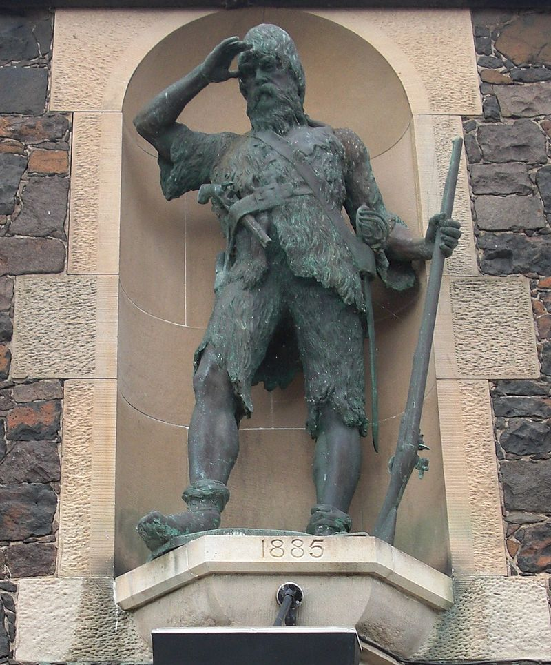
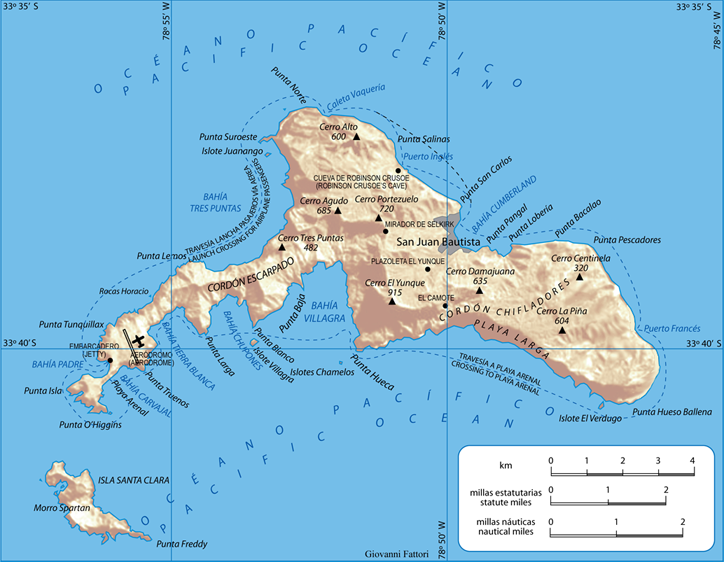
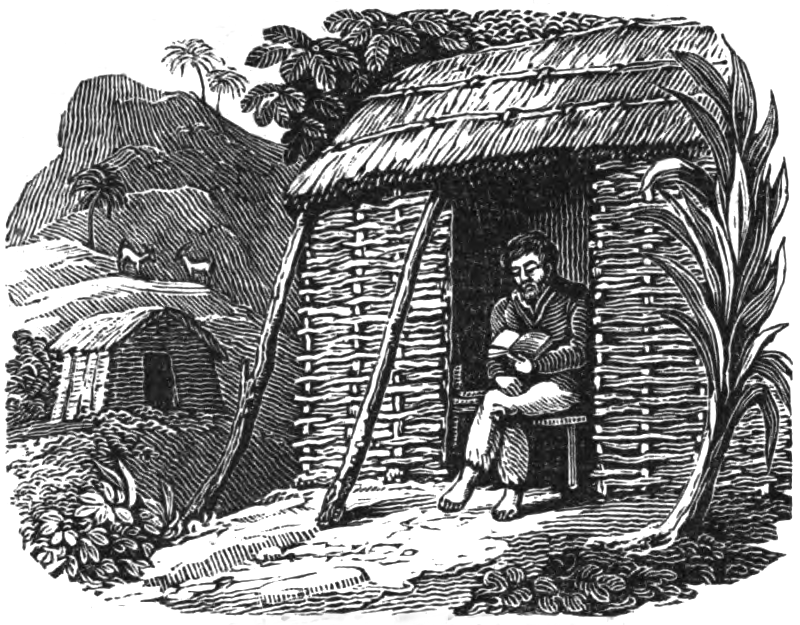
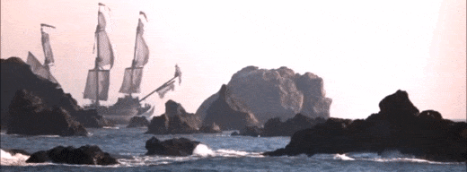
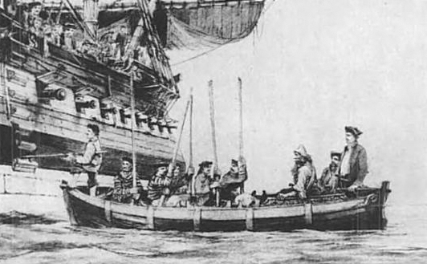

Zatoka Piratów
Alexander Selkirk - właśc. Alexander Selcraig (ur. 1676 w Lower Largo, zm. 13 grudnia 1721 u wybrzeży Afryki Zachodniej) – szkocki żeglarz i korsarz, który spędził cztery lata na bezludnej wyspie. Prawdopodobnie jego losy były inspiracją dla przygód Robinsona Crusoe opisanych w powieści Daniela Defoe pt. Przypadki Robinsona Kruzoe.
Dzieciństwo i młodość
Alexander Selkirk urodził się w szkockiej miejscowości Lower Largo w 1676. Jego ojciec był szewcem i garbarzem. Już w dzieciństwie Selkirk uchodził za nieposłusznego i kłótliwego, co przysparzało mu kłopotów w rodzinnych stronach. Szybko odkrył, iż jego pasją było morze, więc w 1695 zaciągnął się na statek jako marynarz. Awanturniczy charakter Selkirka sprawił, że Szkot przez kilka kolejnych lat parał się korsarstwem na polinezyjskich wodach Pacyfiku.
Selkirk powrócił do Anglii już jako doświadczony żeglarz i wkrótce znalazł nowego pracodawcę. 30 kwietnia 1703 dołączył do pirackiej wyprawy Williama Dampiera, której celem było łupienie francuskich i hiszpańskich statków u wybrzeży Chile. W skład ekspedycji wchodziły dwa żaglowce – dowodzony przez Dampiera St George, a także galeon Cinque Ports, gdzie stanowisko nawigatora otrzymał Selkirk. Po wielomiesięcznej i trudnej podróży, z powodu różnicy zdań pomiędzy dowódcami okrętów, jednostki rozdzieliły się w październiku 1704.
Okoliczności trafienia na bezludną wyspę
Cinque Ports skierował się w stronę niezamieszkałego archipelagu Juan Fernández w celu dokonania niezbędnych napraw oraz uzupełnienia zapasów żywności i wody. Galeon zacumował w pobliżu wyspy znanej wówczas jako Más a Tierra (obecnie Robinson Crusoe). W tamtym okresie Selkirk miał złe przeczucia dotyczące przyszłości okrętu, z powodu jego uszkodzeń powstałych wskutek długotrwałej podróży. Szkot próbował przekonać innych członków załogi, aby porzucić statek, tymczasowo osiedlić się na bezludnej wyspie i poczekać na inny okręt. Nikt nie podzielił jednak obaw Selkirka, zaś jego buntownicze zachowanie nie mogło ujść płazem. Kapitan Cinque Ports, Thomas Stradling, zaproponował Szkotowi, że zgodnie z jego życzeniem, pozostawi go samego na wyspie Más a Tierra. Selkirk natychmiast pożałował swojej decyzji, lecz był zbyt uparty, aby odmówić. Tuż przed ostatecznym odpłynięciem Cinque Ports, Szkot próbował jednak gonić galeon wzywając załogę do powrotu. Wołania oraz prośby okazały się bezskuteczne i Alexander Selkirk został pozostawiony samemu sobie na bezludnej wyspie. Zostawiono mu jedynie muszkiet i niewielką ilość prochu, nóż, podstawowe narzędzia ciesielskie, odzież, linę oraz Pismo Święte. Tymczasem obawy Selkirka okazały się słuszne, gdyż Cinque Ports zatonął niespełna miesiąc później, tracąc większość swej załogi, jednak Szkot nie mógł wtedy o tym wiedzieć.
Pobyt na wyspie

Alexander Selkirk żył w samotności na Más a Tierra przez cztery lata i cztery miesiące. Na początku spędzał większość czasu na wybrzeżu wyspy, poszukując pożywienia oraz wypatrując statku, który mógłby go uratować. Samotność i cierpienie szybko dały mu się we znaki, trapiły go również wyrzuty sumienia. Szkot żywił się głównie skorupiakami wyrzucanymi na brzeg oraz niewielkimi rybami. W końcu Selkirk przeniósł się w głąb wyspy z powodu kolonii uchatek, które w okresie godowym zajęły plaże i stwarzały zagrożenie dla jego życia.
Wewnątrz wyspy Szkotowi żyło się łatwiej, głównie ze względu na dostępność pożywienia. Dzikie kozy zapewniły rozbitkowi mięso i mleko, którego wcześniej mu brakowało. Z kolei dzikie odmiany rzepy, kapusty i czarnego pieprzu pozwoliły mu urozmaicić jadłospis. Musiał jednak nieustannie wykorzystywać swoją wiedzę i spryt, aby rozwiązywać bieżące problemy i przetrwać. Gdy nocami atakowały go wygłodniałe szczury, Selkirk złapał i udomowił dzikie koty, by chroniły go przed napastnikami. Nauczył się perfekcyjnie wykorzystywać materiały, które pozostawiono mu z okrętu, a także te znalezione na wyspie. Dla ochrony przed słońcem i deszczem uplótł sobie dwa kapelusze z liści korzennika, muszkietu używał do polowań na kozy, a nożem patroszył zdobyte mięso. Kiedy skończył mu się proch, nauczył się łapać kozy pieszo. Podczas jednej z takich gonitw spadł z klifu i nabawił się bolesnego urazu. Doszedł do siebie m.in. dzięki Biblii, która w tej trudnej sytuacji dała mu otuchę i wiarę. Nowy nóż stworzył ze znalezionych na plaży metalowych obręczy po beczkach. Po wielu miesiącach, kiedy jego ubranie stało się strzępem szmat, uszył nowe z koziej skóry wykorzystując ścięgna jako nici, a gwoździ jako igły do szycia. Selkirk wykorzystywał więc wiedzę, którą nabył w dzieciństwie, gdy w garbarskim zakładzie obserwował pracę swojego ojca. Jednak gdy zniszczyły mu się buty, zrobienie nowych nie było konieczne, gdyż przez miesiące życia na wyspie stopy rozbitka stały się twarde i odporne na skaleczenia.
Podczas jego pobytu na wyspie dwukrotnie przy brzegu kotwiczyły obce okręty. Niestety były to jednostki hiszpańskie, więc Selkirk jako Szkot i korsarz nie mógł liczyć na żadną pomoc z ich strony. Aby uniknąć pojmania, rozbitek ukrywał się w różnych częściach wyspy. Pewnego razu został jednak dostrzeżony przez hiszpańskich żeglarzy, którzy zaczęli go ścigać. Na szczęście Szkotowi udało się schronić na drzewie i uniknąć pojmania, a przybysze po kilku dniach odpłynęli.
Ratunek

Od 1704 przez cztery lata i cztery miesiące przebywał jako rozbitek na niezamieszkanej wyspie, aż do dnia 2 lutego 1709, gdy został odnaleziony przez dwa angielskie statki: dowodzony przez Woodes Rogersa "Duke" oraz dowodzony przez Stephena Courtneya "Duchess". Nawigatorem wyprawy był były dowódca Selkirka, William Dampier. Statki zatrzymały się na wyspie w celu uzupełnienia zapasów wody i wyleczenia chorych na szkorbut członków załogi. Rozbitek dowiedziawszy się, że jednym z uczestników wyprawy jest Dampier, nie chciał początkowo do niej dołączyć. Ostatecznie został przyjęty na pokład jako mat i opuścił wyspę 13 lutego 1709

Podczas pobytu na wyspie Selkirk zdziwaczał; zapomniał nawet ojczystego języka. Ujrzawszy rozbitka, kapitan opisał go jako mężczyznę ubranego w skóry kóz, który wygląda bardziej dziko niż ich pierwotne właścicielki. Prawdopodobnie stał się inspiracją dla Daniela Defoe do napisania powieści Robinson Crusoe. Podobnie jak w powieści Daniela Defoe, gdy Robinson Crusoe przebywał sam na bezludnej wyspie, musiał sam troszczyć się o pożywienie, rozmawiał ze sobą, być może budował tratwy, aby zbiec z wyspy.
Dzięki protekcji Dampiera Selkirk został sternikiem na okręcie Duke. Później dowodził okrętem korsarskim Increase i napadał na hiszpańskie posiadłości. Zmarł na żółtą febrę w wieku 45 lat u wybrzeży Zachodniej Afryki na okręcie Weymouth i zgodnie z własnym życzeniem został pochowany w morzu.